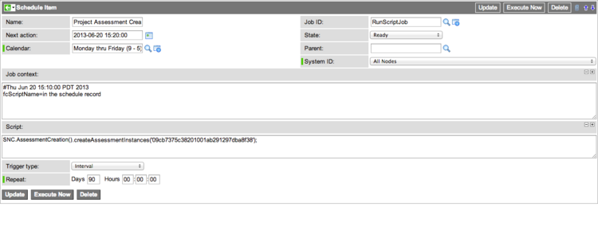
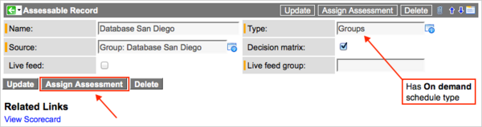

Generating Assessments
| |
Note: This article applies to Fuji. For more current information, see Assessment Generation at http://docs.servicenow.com
The ServiceNow Wiki is no longer being updated. Please refer to http://docs.servicenow.com for the latest product documentation. |
Contents
1 Overview
In the Assessments application, administrators or assessment administrators can trigger the system to generate scheduled assessments or on-demand assessments when all the prerequisite steps are completed. An assessment administrator must publish the metric type to enable assessment generation (starting with the Eureka release).
The system performs these tasks when it generates assessments:
- Creates assessment questionnaires from non-scripted metrics and assigns the questionnaires to users. When users complete their assigned questionnaires, the system uses their responses to calculate assessment results.
- Runs scripted metrics from each category to query the database and calculate assessment results.
Each time the system generates assessments, it creates various components, which assessment administrators can view. Consider having an administrator set a schedule for recurring data cleanup, as the system can potentially generate a considerable amount of assessment data.
2 Publishing Metric Types
Before it is possible to generate assessments, an assessment administrator must publish the associated metric type (starting with the Eureka release). The State field on the Assessment Metric Type form indicates whether the type is published. The default state is Draft, which disables the system from generating assessments. To enable assessment generation, navigate to Assessments > Metric Definition > Types, open the metric type, and click Publish. The Publish button is available only if the state is Draft and there is at least one metric associated with the type.
| |
Note: A metric type cannot be moved back to the Draft state after it has been published. |
3 Generating Assessments
Follow the appropriate guidelines to generate scheduled or on-demand assessments.
3.1 Scheduled Assessments
The system automatically generates a unique scheduled job for each metric type with the Schedule type field set to Scheduled. Each scheduled job generates assessment components for the related metric type. By default, the scheduled job runs when an administrator executes it manually, but administrators can set a schedule to generate assessments automatically on a recurring basis.
For the system to properly generate scheduled assessments, the metric type must be active and published (starting with the Eureka release). The metric type must also be associated to at least one metric category. That metric category must be associated to one or more of each of the following items:
- Assessable record
- Stakeholder associated to one of the assessable records
- Metric
3.1.1 Generating Manually
Administrators can generate scheduled assessments manually. Use this option, for example, if you have set a schedule but want to generate assessments before the next scheduled run date.
- Navigate to Assessments > Metric Definition > Types.
- Open the appropriate metric type record.
- Click Generate Assessments to trigger the scheduled job immediately.
- Note: Be careful to click Generate Assessments, not Generate Assessable Records.
The Vendor Performance feature provides a direct method of generating assessments for the Vendor metric type. To generate vendor assessments manually, navigate to Vendor Performance > Admin > Generate Assessments. Click the Generate Assessments module to execute the scheduled job for the Vendor type. This module is available to administrators only.
3.1.2 Setting a Schedule
Administrators can set assessment generation schedules. You must set a schedule for each metric type individually.
- Navigate to Assessments > Metric Definition > Types.
- Open the appropriate metric type record.
- Click the reference icon (
 ) next to the Scheduled job field to open the Schedule Item record.
) next to the Scheduled job field to open the Schedule Item record. - Locate the Trigger type field and set a recurring schedule for the scheduled job.
- For example, if you want to generate assessment components each month, select the Interval or Repeat trigger type and specify a Repeat value of 30 days. Alternatively, select Day in Month and specify a Run time and Run day of month.
- The optimal frequency of assessment generation is subjective. When you set the schedule, keep in mind the number of records to evaluate, how often your organization requires updated assessment results, the time and effort required of users to complete assessments, and other relevant factors.
-
- 
{kind=link}
| |
Note: If someone changes the schedule type from Scheduled to On demand, the system deletes the scheduled job for the metric type. If you change the schedule type back to Scheduled, the system creates a new scheduled job, which must be configured to run on a schedule. |
3.2 On-Demand Assessments
On-demand assessments can be generated for metric types with the Schedule type field set to On demand. For the system to properly generate on-demand assessments, the metric type must be active and published (starting with the Eureka release). The metric type must also be associated to at least one metric category. That metric category must be associated to one or more of each of the following items:
- Assessable record
- Metric
By default, an assessment administrator can generate an on-demand assessment for one assessable record or, starting with the Eureka release, multiple assessable records.
3.2.1 Generating Assessments for One Assessable Record
When you generate an on-demand assessment from the Assessable Record form, the resulting assessment contains questions from the categories associated to the assessable record.
- Navigate to Assessments > Assessable Records.
- Open an assessable record associated to a metric type that has the On demand schedule type.
- On the Assessable Record form, click Assign Assessment.
-
- 
-
- The Select Assessor dialog box appears.
-
- Select a user from the Recent Assessors list or select a different user.
- Click OK.
- The system generates an assessment instance assigned to the selected user.
{kind=link}
{kind=link}
3.2.2 Generating Assessments for Multiple Assessable Records
When you generate an on-demand assessment from the Assessment Metric Type form, the resulting assessment contains questions from all categories associated to any assessable records for the metric type. For example, if there are 15 assessable records associated to at least one category with assessment metrics, the assessment contains questions for all 15 assessable records. This capability is available starting with the Eureka release.
- Navigate to Assessments > Metric Definition > Types.
- Open a metric type that has the On demand schedule type.
- On the Assessment Metric Type form, click Assign Assessment.
- The Select Assessor dialog box appears.
- Select a user from the Recent Assessors list or select a different user.
- Click OK.
- The system generates an assessment instance assigned to the selected user.
3.2.3 On-Demand Assessment API
The Assign Assessment buttons call an API to generate on-demand assessments. You can call the API from any script in ServiceNow, such as a business rule or client script.
To use the API, you need the sys_ids of the following items:
- An assessable record to evaluate. The assessable record must be associated with an on-demand type and at least one category that contains non-scripted metrics.
- One or more users who should perform the assessment. The API generates a questionnaire about the specified assessable record for each user.
4 Generated Components
Each time the system generates assessments, it creates some or all of these components:
4.1 Assessment Groups
An assessment group is a container for assessment instances and assessment results generated in a single occurrence. The system generates an assessment group every time the scheduled job runs or the API is called, when there is at least one assessable record associated to a category in the type.
- Navigate to Assessments > Assessments > Assessment Groups.
- Click an assessment group number to open the record.
- View the Assessment Group form, which displays the group Number, the associated Metric type, and these related lists:
- Assessment Instances: Lists all assessment instances within this group. There may be no records in this related list. The system does not generate assessment instances if there are only scripted metrics for the type.
- Metric Results: Lists all metric results for this group. There may be no records in this related list initially. The system generates metric results immediately for scripted metrics, but not for non-scripted metrics, which appear as questions on assessments and require user response. The system dynamically updates the records in this list as users complete assessment questionnaires.
- Assessment Category Results: Lists all category results for this group. There may be no records in this related list initially. The system generates category results immediately if there are only scripted metrics in a category. Otherwise, the system does not calculate category results until a user completes an assessment questionnaire that contains questions from the category.
{kind=link}
| |
Note: To prevent the loss of important assessment data, you cannot delete an assessment group if it contains any assessment instances, metric results, or category results. |
4.2 Assessment Instances
An assessment instance represents one occurrence of a questionnaire assigned to one user. The system generates assessment instances only when the required conditions are met, as described in Scheduled Assessments and On-Demand Assessments, and there are non-scripted metrics in at least one category.
When the system generates scheduled assessments for a metric type, each assessment instance contains questions about assessable records and categories related to the stakeholder to which it is assigned.
- Example:
- Recall that there can be multiple stakeholder records associated with one user record. Minh Leclare is a stakeholder for these items related to the Vendor metric type:
Assessable Record Category Amazon User Satisfaction ServiceNow User Satisfaction ServiceNow Reliability Cisco Reliability
- When the system generates a scheduled assessment, Minh is assigned one assessment instance. Minh must evaluate Amazon, ServiceNow, and Cisco by answering questions from the categories for which she is a stakeholder. Assuming that there are three questions in the User Satisfaction category and six questions in Reliability, Minh's questionnaire contains three questions about Amazon, nine questions about ServiceNow, and six questions about Cisco.
When the system generates an on-demand assessment for a specific assessable record, the assessment instance contains questions about that assessable record and all its associated categories. When the system generates an on-demand assessment for a metric type, the assessment instance contains questions about all that metric type's assessable records and their associated categories (starting with the Eureka release).
4.2.1 Viewing Assessment Instances
To view an assessment instance:
- Navigate to Assessments > Assessments > Assessment Instances.
- Click an assessment instance number to open the record.
- View the record, which displays assessment information (see table).
- You can click Take assessment (not pictured) to open the questionnaire if all the following conditions are true for the assessment instance:
- It is Assigned to you.
- The State is Ready to take or In progress.
- The associated metric type is active (starting with the Eureka release).
- You can click Take assessment (not pictured) to open the questionnaire if all the following conditions are true for the assessment instance:
{kind=link}
Field Description Number [Read-Only] Automatically generated record number. Metric type [Read-Only] Metric type of this assessment. Assessment group [Read-Only] Assessment group to which this assessment belongs. State [Read-Only] State of the assessment. The possible states are Ready to take, In progress, Complete, and Canceled. Assigned to User to whom this assessment is assigned. This field becomes read-only when the state is In progress, Complete, or Canceled. Due date [Read-Only] Date by which the assessment instance must be completed. The system automatically populates the due date from the value in the metric type's Assessment duration field. The system generates email notifications related to the due date. Related List Assessment Instance Questions Lists all instance question records, which store user response values for each question on the assessment questionnaire.
4.3 Assessment Results
For every assessment group, there are assessment results. Data calculated from an evaluation of one metric is classified as a metric result. Data calculated from the weighted average of all metric results in a category is classified as a category result. The system calculates some assessment results when the assessment is generated, and others when users complete questionnaires. For more information, see Assessment Results.
5 Assessment Data Cleanup
The assessment process generates a considerable amount of data, some of which is not useful after a short time. Assessments include a scheduled job called Remove Old Assessment Data that is available to administrators only. The scheduled job removes these items if they are more than a year old:
- Assessment instance questions
- Assessment instances
- Metric results
By default, the scheduled job is executed manually. Administrators can configure the scheduled job to run automatically on a recurring schedule.
- Navigate to System Scheduler > Scheduled Jobs > Scheduled Jobs.
- Open the Remove Old Assessment Data record.
- On the Schedule Item form, set the Trigger type field to run the scheduled job on a recurring schedule.
- It is recommended to set the scheduled job to run on a weekly or monthly basis.
- [Optional] Click Execute Now to run the scheduled job.